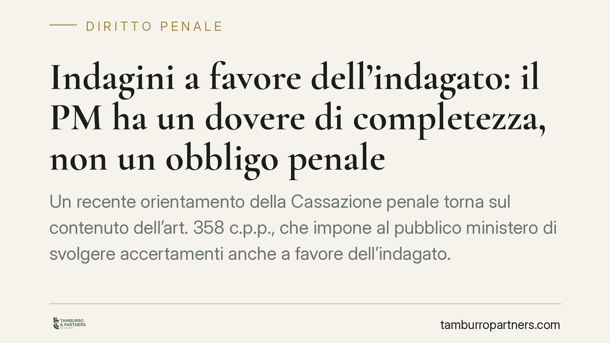

Indagini a favore dell'indagato: il PM ha un dovere di completezza, non un obbligo penale
Un recente orientamento della Cassazione penale torna sul contenuto dell'art. 358 c.p.p., che impone al pubblico ministero di svolgere accertamenti anche a favore dell'indagato. La Corte distingue tra dovere di completezza investigativa e obbligo di compiere ogni singolo atto: la selezione degli atti resta discrezionale e la sua mancata adozione non integra, di per sé, il reato di rifiuto di atti d'ufficio.

Il fatto processuale
La questione riguarda la portata dell'obbligo posto in capo al pubblico ministero dall'art. 358 c.p.p. La difesa lamentava che la mancata acquisizione di determinati atti investigativi, potenzialmente favorevoli all'indagato, potesse configurare una condotta penalmente rilevante a carico dei magistrati inquirenti.
La Cassazione ha respinto questa impostazione, offrendo una lettura che merita attenzione perché tocca il confine tra tre piani distinti: la correttezza processuale, la responsabilità disciplinare e la responsabilità penale del magistrato.
Inquadramento normativo
L'art. 358 c.p.p. stabilisce che il pubblico ministero "svolge altresì accertamenti su fatti e circostanze a favore della persona sottoposta alle indagini". La norma esprime il principio di completezza delle indagini preliminari: il PM non è parte in senso privatistico, ma organo tenuto a una ricostruzione integrale dei fatti.
Altro è però trasformare questo dovere di completezza in un obbligo vincolato a compiere ogni possibile atto integrativo. La selezione degli accertamenti ricade nella discrezionalità tecnica dell'inquirente, che valuta rilevanza, pertinenza e utilità di ciascun atto rispetto all'oggetto dell'indagine.
Sul versante penale entra in gioco l'art. 328 c.p., rubricato "Rifiuto di atti d'ufficio. Omissione". La disposizione punisce il pubblico ufficiale che rifiuta indebitamente un atto del proprio ufficio che, per ragioni di giustizia, deve essere compiuto senza ritardo. Il presupposto è l'esistenza di un atto dovuto e vincolato: un obbligo giuridico specifico, non una valutazione discrezionale.
Le implicazioni pratiche
La distinzione ha ricadute concrete per chi è sottoposto a indagini. Il dovere di completezza dell'art. 358 c.p.p. non si traduce in un diritto dell'indagato a pretendere il compimento di ogni atto ritenuto favorevole. Quando il PM omette un accertamento, occorre distinguere:
- se l'omissione riguarda un atto vincolato e non ritardabile, può in astratto rilevare sul piano penale ex art. 328 c.p.;
- se riguarda una scelta discrezionale sulla direzione dell'indagine, la questione si sposta sul terreno processuale e, eventualmente, disciplinare.
È un punto cruciale. La contestazione di una lacuna investigativa raramente trova risposta nella denuncia penale del magistrato. Trova invece risposta negli strumenti processuali a disposizione della difesa, che consentono di colmare il vuoto e di introdurre nel procedimento gli elementi favorevoli.
La responsabilità penale del PM per omesso atto favorevole resta dunque un'ipotesi eccezionale, ancorata a presupposti stringenti. La mancata acquisizione di una prova, se frutto di valutazione discrezionale, non integra automaticamente alcun reato.
Il ruolo delle indagini difensive
Proprio perché il PM non è tenuto a compiere ogni atto, la difesa non deve attendere passivamente. L'ordinamento riconosce alla persona sottoposta a indagini un potere investigativo autonomo, disciplinato dagli artt. 391-bis e seguenti c.p.p.
�attraverso le indagini difensive il difensore può assumere informazioni da persone informate sui fatti, acquisire documentazione presso pubbliche amministrazioni, disporre accertamenti tecnici e formare un proprio fascicolo. Gli elementi raccolti possono essere versati agli atti e valutati dal giudice.
La completezza dell'indagine, in altre parole, non dipende solo dall'iniziativa dell'accusa: è un risultato che la difesa può e deve contribuire a costruire.
Cosa fare in concreto
- Verificare tempestivamente, tramite il difensore, se atti favorevoli siano stati richiesti al PM e con quale esito documentale.
- Attivare le indagini difensive ex artt. 391-bis e seguenti c.p.p. per acquisire autonomamente gli elementi non raccolti dall'accusa.
- Formalizzare per iscritto le richieste di integrazione probatoria, così da lasciare traccia processuale della sollecitazione.
- Valutare con il difensore la differenza tra vizio processuale, profilo disciplinare ed eventuale rilevanza penale, senza sovrapporre i piani.
- Non affidare a una denuncia penale contro il magistrato ciò che va gestito con gli strumenti del procedimento.
Consigliamo di impostare fin dalle prime fasi una strategia difensiva attiva: attendere l'iniziativa dell'accusa espone al rischio di lacune non più colmabili nel dibattimento.
Contributo informativo a cura di Tamburro & Partners Avvocati - Avv. Giuseppe Tamburro. Non costituisce parere legale.
Ogni condominio ha una storia a sé.
Se gestisci un'amministrazione e vuoi un confronto su una specifica questione condominiale, scrivi allo studio. Ti rispondiamo entro un giorno lavorativo.